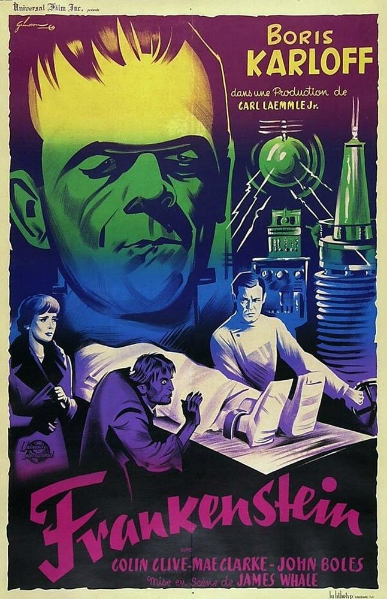

À l'affiche
Frankenstein
1931 - James Whale
1h10 - Universal
Boris Karloff, Collin Clive,
Mae Clark et John Boles
Frankenstein; or, The Modern Prome-theus is a novel written by English author Mary Shelley (1797 – 1851) that tells the story of Victor Frankenstein, a young scientist who creates a grotesque but sapient creature in an unorthodox scientific experiment. Shelley started writing the story when she was 18, and the first edition of the novel was published anonymously in London on 1 January 1818, when she was 20. Her name first appeared on the second edition, published in France in 1823.
Note de Retro Vision :
Incontournable !
La vie est belle
1946 - Frank Capra
2h10 - Liberty Films
James Stewart, Donna Reed,
Lionel Barrymore et Henry Travers
Frankenstein; or, The Modern Prome-theus is a novel written by English author Mary Shelley (1797 – 1851) that tells the story of Victor Frankenstein, a young scientist who creates a grotesque but sapient creature in an unorthodox scientific experiment. Shelley started writing the story when she was 18, and the first edition of the novel was published anonymously in London on 1 January 1818, when she was 20. Her name first appeared on the second edition, published in France in 1823.
Note de Retro Vision :
Incontournable !
Godzilla
1954 - Ishirô Honda
1h36 - Toho
Akira Takarada, Momoko Kôchi,
Akihiko Hirata et Takashi Shimura
Frankenstein; or, The Modern Prome-theus is a novel written by English author Mary Shelley (1797 – 1851) that tells the story of Victor Frankenstein, a young scientist who creates a grotesque but sapient creature in an unorthodox scientific experiment. Shelley started writing the story when she was 18, and the first edition of the novel was published anonymously in London on 1 January 1818, when she was 20. Her name first appeared on the second edition, published in France in 1823.
Note de Retro Vision :
Incontournable !

L'homme qui tua Liberty Valance
1961 - John Ford
2h03 - Paramount
James Stewart, John Wayne,
Lee Marvin et Vera Miles
Frankenstein; or, The Modern Prome-theus is a novel written by English author Mary Shelley (1797 – 1851) that tells the story of Victor Frankenstein, a young scientist who creates a grotesque but sapient creature in an unorthodox scientific experiment. Shelley started writing the story when she was 18, and the first edition of the novel was published anonymously in London on 1 January 1818, when she was 20. Her name first appeared on the second edition, published in France in 1823.
Note de Retro Vision :
Incontournable !
The Rocky Horror Picture Show
1975 - Jim Sharman
1h40 - Paramount
Tim Curry, Susan Sarrandon,
Barry Bostwick et Meat Loaf
Frankenstein; or, The Modern Prome-theus is a novel written by English author Mary Shelley (1797 – 1851) that tells the story of Victor Frankenstein, a young scientist who creates a grotesque but sapient creature in an unorthodox scientific experiment. Shelley started writing the story when she was 18, and the first edition of the novel was published anonymously in London on 1 January 1818, when she was 20. Her name first appeared on the second edition, published in France in 1823.
Note de Retro Vision :
Incontournable !
Retour vers le futur
1984 - Robert Zemeckis
1h40 - Amblin Entertainment
Michael J. Fox, Christopher Lloyd,
Lea Thompson et Thomas F. Wilson
Frankenstein; or, The Modern Prome-theus is a novel written by English author Mary Shelley (1797 – 1851) that tells the story of Victor Frankenstein, a young scientist who creates a grotesque but sapient creature in an unorthodox scientific experiment. Shelley started writing the story when she was 18, and the first edition of the novel was published anonymously in London on 1 January 1818, when she was 20. Her name first appeared on the second edition, published in France in 1823.
Note de Retro Vision :
Incontournable !
The Big Lebowski
1998 - Joel & Ethan Coen
1h57 - Working Title Filmsa
Jeff Bridges, John Goodman,
Julianne Moore et Steve Buscemi
Frankenstein; or, The Modern Prome-theus is a novel written by English author Mary Shelley (1797 – 1851) that tells the story of Victor Frankenstein, a young scientist who creates a grotesque but sapient creature in an unorthodox scientific experiment. Shelley started writing the story when she was 18, and the first edition of the novel was published anonymously in London on 1 January 1818, when she was 20. Her name first appeared on the second edition, published in France in 1823.
Note de Retro Vision :
Incontournable !

Lost In Translation
2003 - Sophia Coppola
1h41 - Focus Features
Scarlett Johansson, Bill Murray,
Giovanni Ribisi et Anna Faris
Frankenstein; or, The Modern Prome-theus is a novel written by English author Mary Shelley (1797 – 1851) that tells the story of Victor Frankenstein, a young scientist who creates a grotesque but sapient creature in an unorthodox scientific experiment. Shelley started writing the story when she was 18, and the first edition of the novel was published anonymously in London on 1 January 1818, when she was 20. Her name first appeared on the second edition, published in France in 1823.
Note de Retro Vision :
Incontournable !